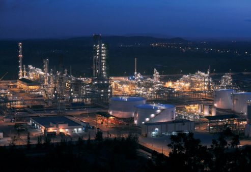

 Al-Sharqiyyah is one of the four main geographic regions of the country and comprises the principal petroleum-producing areas of Saudi Arabia. The wealth produced from extensive oil deposits, discovered in the 1930s, transformed Al-Sharqiyyah into one of the kingdom’s most progressive regions. Many oilfields, including Al-Ghawār (among the world’s largest), are operated by the Saudi Aramco oil company. Most of the petroleum is exported by tankers from Ras Tanura. Until the 1970s petroleum was also shipped to Sidon, Lebanon, via the Trans-Arabian Pipeline (Tapline). Major towns in the region include Al-Dammam, the largest petroleum centre in the nation and a major port on the Persian Gulf; Al-Hasa, the largest oasis in the kingdom; Al-Hufūf, a former administrative centre; Al-Mubarraz, an agricultural centre; and the oil centres of Al-Ẓahrān and Al-Qaṭīf. A railway, completed in the 1950s, links Al-Dammam with Al-Ẓahrān, Al-Hufūf, and Riyadh. Al-Ẓahrān has an international airport.
you can vist this web page to more information click here